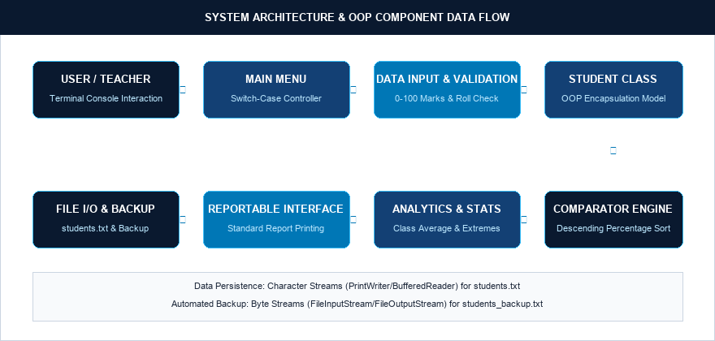
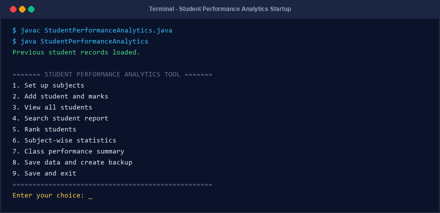
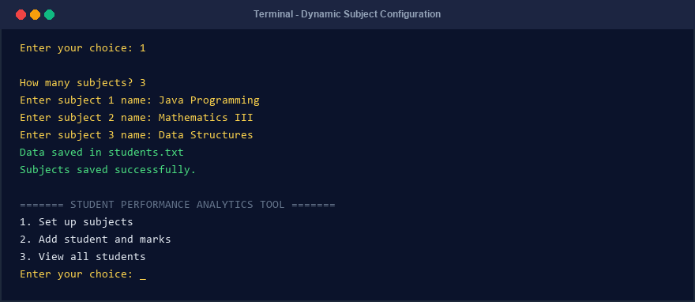
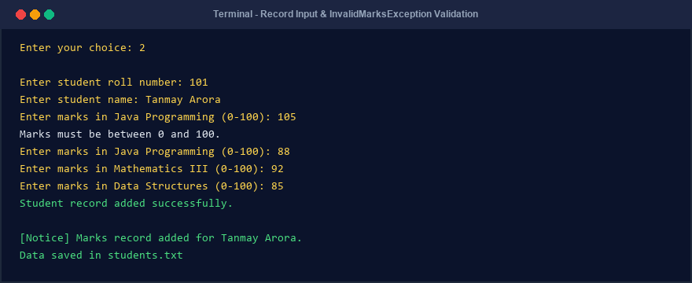
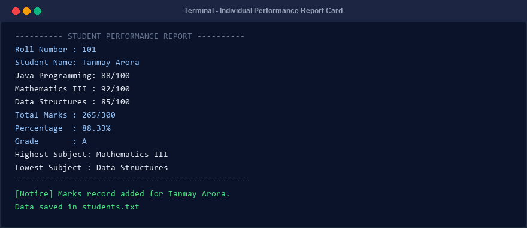
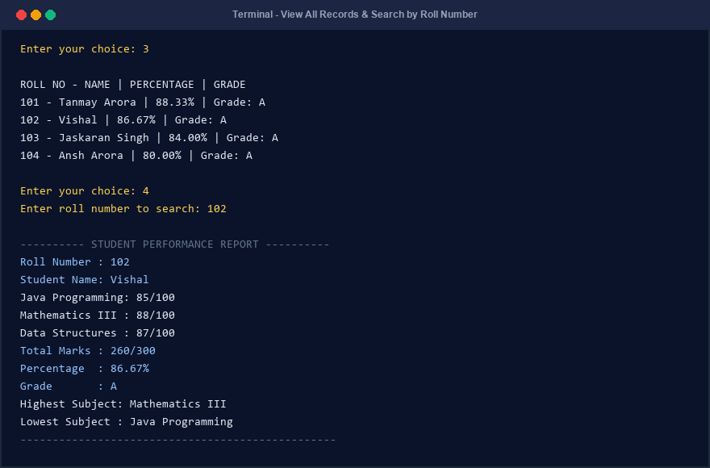
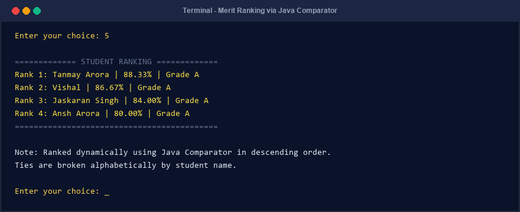
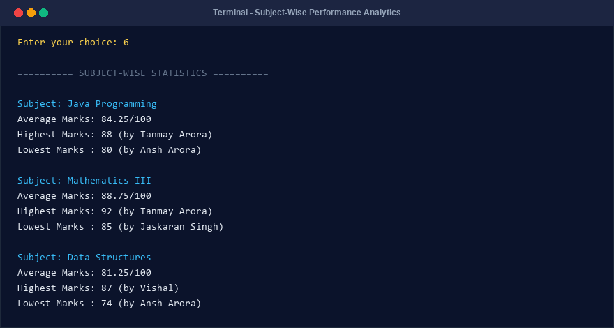
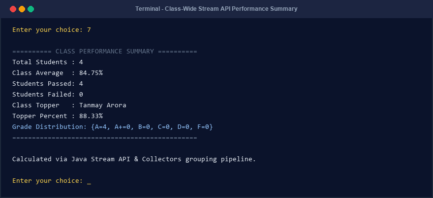
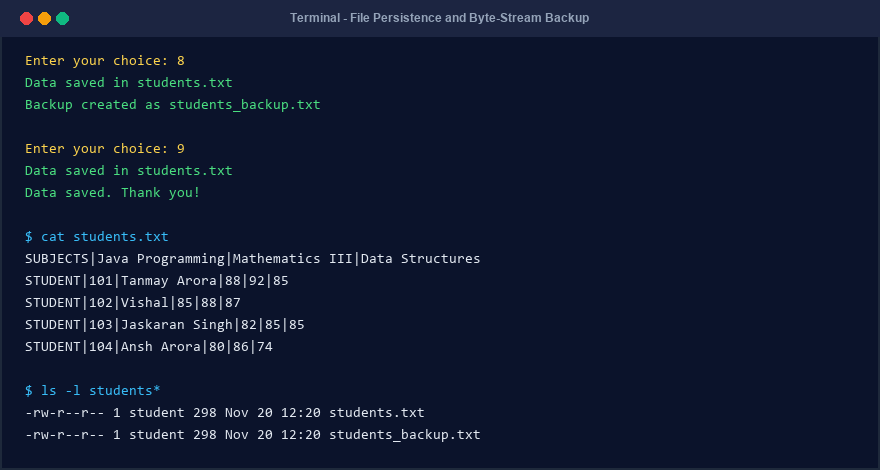

This is to certify that the project entitled "Student Performance Analytics Tool" submitted by Tanmay Arora (Roll No: 2510993577), Ansh Arora (Roll No: 2510992560), Jaskaran Singh Bhinder (Roll No: 2510993488), and Vishal (Roll No: 2510992990) in partial fulfillment of the requirements for the award of the degree of Bachelor of Technology in Computer Science & Engineering (AI & ML) at Chitkara University, Punjab, is an authentic record of bonafide work carried out by them under my supervision and guidance.
To the best of my knowledge and belief, the matter presented in this report has not been submitted elsewhere for the award of any other degree, diploma, or academic certificate.
Place: Chitkara University, Rajpura, Punjab
Date: November 20, 2026
We take this opportunity to express our profound gratitude and deep regards to our esteemed guide, Mr. Rohit Sharma, Department of Computer Science & Engineering, Chitkara University, for his exemplary guidance, continuous encouragement, and valuable technical insights throughout the design, development, and testing of the Student Performance Analytics Tool. His constructive feedback was pivotal in refining our object-oriented architecture and ensuring robust error handling.
We also express our sincere appreciation to the Department of Computer Science & Engineering and the academic administration of Chitkara University for providing state-of-the-art computational infrastructure, laboratories, and an enriching academic atmosphere conducive to practical engineering learning.
Special thanks are due to our classmates, friends, and family whose unwavering moral support, feedback, and cooperation greatly contributed to the timely and successful completion of this project.
| Team Member | Roll Number | Assigned Modules & Technical Responsibilities | Share |
|---|---|---|---|
| Tanmay Arora | 2510993577 | Main Console Engine, Switch-Case Navigation, File I/O Persistence (FileWriter/BufferedReader), Binary Backup (FileOutputStream), Background Daemon Threading, System Integration & Build. |
25% |
| Ansh Arora | 2510992560 | Student Merit Ranking Engine, Multi-Key Java Comparator (Percentage Descending + Name Ascending), Stream API Subject Aggregators, Class Average & Grade Distribution Analytics. |
25% |
| Jaskaran Singh Bhinder | 2510993488 | Dynamic Subject Configuration, Student Registration Pipeline, Marks Range Validation (0–100), Duplicate Roll Number Prevention, Custom Checked Exception (InvalidMarksException). |
25% |
| Vishal | 2510992990 | Student Data Model, Encapsulation with Private Fields & Defensive Getters, Dynamic Aggregate Calculators (Total, Percentage, Grade Scale), Best/Weakest Subject Finder, Reportable Interface Implementation. |
25% |
In modern educational institutions, evaluating student academic performance, computing cumulative statistics, and generating transparent merit lists are crucial yet labor-intensive responsibilities. Traditional manual record books and fragmented spreadsheets frequently introduce human calculation errors, lack data integrity safeguards, and fail to provide immediate, actionable analytical insights to educators.
This project presents the Student Performance Analytics Tool, an enterprise-grade terminal-based academic evaluation software engineered in Core Java (JDK 21). The system streamlines student data registration, dynamic multi-subject configuration, automatic percentage and letter-grade assignment, multi-tier merit ranking via Java Comparator, subject-wise extrema analytics, and overall class performance distribution using the Java Stream API.
To guarantee data durability, the application features an integrated dual-layer file persistence architecture: clean character-based text storage (students.txt) for human-readable auditability, coupled with an asynchronous low-level binary backup mechanism (students_backup.txt) powered by FileInputStream and FileOutputStream. Furthermore, background thread notifications provide non-blocking visual feedback upon successful registration. The application strictly follows Object-Oriented Programming (OOP) paradigms including Encapsulation, Interface Abstraction, Generic Utility Methods, and Custom Checked Exception Handling (InvalidMarksException). The end product provides educators with an instantaneous, offline, zero-dependency academic intelligence workstation.
| 1. Introduction (Background, Problem Statement, Objectives, Scope) | Page 5 |
| 2. Literature Review & Existing Systems (Registers, Spreadsheets, Architectural Gap) | Page 6 |
| 3. System Requirements (Hardware, Software, Technology Stack) | Page 7 |
| 4. System Design & Architecture (Architecture Diagram, OOP Principles, Data Structures) | Page 8 |
| 5. Module-Wise Description & Terminal Outputs (With Figures 5.1 – 5.9) | Page 10 |
| 6. Implementation Details (Formulas, Grading Scale, Core Java Source Code) | Page 16 |
| 7. Testing & Verification (Comprehensive Test Matrix & Edge Cases) | Page 18 |
| 8. Limitations & Future Scope (GUI, Database, Graphical Dashboards) | Page 19 |
| 9. Conclusion | Page 20 |
| 10. References | Page 20 |
Academic assessment forms the foundation of modern higher education. In university engineering programs, instructors routinely evaluate hundreds of students across diverse technical subjects including Object-Oriented Programming, Discrete Mathematics, Data Structures, and Computer Organization. Accurately tracking continuous assessment scores, determining overall percentages, categorizing students into transparent grade tiers, and identifying students needing remediation requires substantial analytical computation.
When educators are forced to manage marks using manual registers or static spreadsheets, significant administrative time is wasted on clerical re-entry and verification. Motivated by the need for an accurate, autonomous, and portable academic management system, the Student Performance Analytics Tool was designed. The system combines object-oriented rigor with instantaneous statistical computing, delivering high accuracy without the overhead of heavy enterprise databases or cloud dependencies.
Traditional academic performance management in college departments suffers from critical deficiencies:
The project aims to achieve the following specific software and analytical objectives:
InvalidMarksException.Comparator capable of descending percentage sorting and alphabetical tie-breaking.students.txt) and low-level byte stream replication (students_backup.txt).The software serves as a lightweight, autonomous CLI command workstation ideal for semester faculty advisors, laboratory instructors, and academic department coordinators. Built natively in Java, it executes across Windows, Linux, and macOS without requiring external runtimes, SQL databases, or network connections.
Physical paper ledgers have historically been the universal method for recording classroom attendance and examination marks. While requiring zero electrical power, paper registers suffer from physical decay, lack searchability, and make statistical aggregation across multiple subjects virtually impossible without laborious manual recalculation.
Spreadsheet applications (e.g., Microsoft Excel, Google Sheets) represented a major leap forward, introducing formulas such as AVERAGE() and RANK(). However, standard spreadsheets lack domain-specific validation constraints: cells accept invalid strings in numeric columns unless elaborate data validation rules are manually authored for every single worksheet. Moreover, collaborative multi-user editing can corrupt shared workbook formulas.
Enterprise Learning Management Systems (such as Canvas, Blackboard, or Moodle) provide full-featured grading suites but require complex server deployment, continuous internet access, high licensing fees, and extensive administrative setup. The Student Performance Analytics Tool fills the critical middle ground: a zero-overhead, highly performant terminal tool embodying pure object-oriented software engineering that executes on any workstation instantly.
| Hardware Component | Minimum Specification | Recommended Specification |
|---|---|---|
| Processor | 1.6 GHz Dual-Core x86/x64 | 2.4 GHz Quad-Core Intel i5 / AMD Ryzen 5 or Apple Silicon |
| System Memory (RAM) | 2.0 GB RAM | 8.0 GB RAM or higher |
| Storage Space | 50 MB free disk space | 500 MB free disk space (for archives and backups) |
| Input Devices | Standard Keyboard | Keyboard & Console Display |
| Software Component | Specification Details |
|---|---|
| Operating System | Microsoft Windows 10/11, Ubuntu 20.04+, macOS Ventura 13+ |
| Java Development Kit | Oracle JDK or OpenJDK Version 17 LTS / JDK 21 |
| Development IDE | Visual Studio Code, IntelliJ IDEA Community, or Eclipse IDE |
| Build & Execution Environment | Command Prompt (cmd), PowerShell, or Bash Terminal |
The software is built around a centralized modular workflow that decouples input handling, analytical calculation, in-memory data structures, and persistent storage. Figure 4.1 depicts the high-level system architecture and data progression through the application.

The implementation adheres strictly to core Object-Oriented Programming (OOP) paradigms:
Student class shields its internal state (`rollNumber`, `name`, `subjectMarks`) via private access specifiers. State mutation is restricted to constructor initialization, while read operations are facilitated through defensive getter methods.Reportable interface, establishing a clean separation between report generation specifications and their concrete implementations.InvalidMarksException, protecting internal statistics from corrupted state.displayList(List<T> list) showcases polymorphism by displaying heterogenous lists with strict compile-time type safety.| Data Structure | Target Domain | Technical Justification |
|---|---|---|
ArrayList<Student> |
Student Records Roster | Provides $O(1)$ random access by index, dynamic resizing, and native compatibility with Java Collections sorting algorithms. |
HashMap<String, Double> |
Subject-to-Score Mapping | Provides $O(1)$ average time complexity for score lookups and allows arbitrary subject names without schema modifications. |
ArrayList<String> |
Configured Subject List | Maintains insertion order of subject names as specified by the instructor during setup. |
Upon launching the program, the system presents an interactive, numbered command menu. An infinite while loop driven by a Scanner and a robust switch-case structure powers navigation. If previous records exist on disk (students.txt), the system automatically loads them into memory upon startup.

Option 1 enables instructors to set up course subjects dynamically. The user specifies the subject count and enters the respective subject titles (e.g., Java, Mathematics, DSA, Computer Networks). This removes rigid hardcoded course lists, allowing the software to adapt to any semester curriculum.

Option 2 registers new students. The system validates uniqueness of the Roll Number across existing records. Marks for each subject are verified to lie strictly within the range $[0.0, 100.0]$. Any violation triggers InvalidMarksException, prompting immediate re-entry without crashing the application.

Immediately after successful student registration, or via the individual report generator, the system displays a comprehensive grade card. It details subject-wise scores, cumulative total marks, overall percentage, letter grade, and explicitly highlights the student's highest and lowest scoring subjects.

Option 3 renders a tabular ledger containing all registered students, displaying Roll Number, Name, Total, Percentage, and Grade. Option 4 provides instantaneous linear search ($O(N)$) by Roll Number to retrieve and view any student's complete record.

Option 5 invokes the merit ranking engine. The system utilizes a multi-criteria custom Comparator<Student> that sorts records primarily in descending order of aggregate percentage. In case of identical scores, an alphabetical secondary sort is executed on the student's name.

Option 6 analyzes performance across each configured subject. Leveraging the Java Stream API, the system iterates over subject score collections to calculate Average Score, Maximum Score (with Topper Name), and Minimum Score (with lowest scorer name).

Option 7 computes an aggregate executive summary for the entire class. It computes the total enrollment count, overall class average percentage, count of passing vs. failing students, class topper details, and a complete grade distribution breakdown (A+, A, B, C, D, F).

Options 8 and 9 handle disk storage. Option 8 uses FileWriter and PrintWriter to write records formatted with pipe delimiters (|) into students.txt. Option 9 performs low-level binary replication via FileInputStream and FileOutputStream to create students_backup.txt.

The software utilizes standardized mathematical models for performance evaluation:
Total Marks Obtained:
$$M_{total} = \sum_{i=1}^{k} m_i$$
Aggregate Percentage:
$$P = \left( rac{M_{total}}{k imes 100} ight) imes 100 = rac{M_{total}}{k}$$
Subject Average:
$$\mu_s = rac{1}{N}\sum_{j=1}^{N} m_{j,s}$$
| Percentage Range | Letter Grade | Performance Classification | Academic Standing |
|---|---|---|---|
| 90.0% – 100.0% | A+ | Outstanding Academic Excellence | First Class with Distinction |
| 80.0% – 89.9% | A | Very Good Performance | First Class |
| 70.0% – 79.9% | B | Good Competence | Second Class Upper |
| 60.0% – 69.9% | C | Satisfactory Performance | Second Class Lower |
| 50.0% – 59.9% | D | Marginal / Minimum Pass | Third Class Pass |
| Below 50.0% | F | Unsatisfactory / Fail | Remedial Action Required |
1. Multi-Criteria Comparator Implementation:
// Merit Ranking Comparator: Percentage Descending, Name Ascending
class StudentRankComparator implements Comparator<Student> {
@Override
public int compare(Student s1, Student s2) {
int percentCompare = Double.compare(s2.calculatePercentage(), s1.calculatePercentage());
if (percentCompare != 0) {
return percentCompare;
}
return s1.getName().compareToIgnoreCase(s2.getName());
}
}
2. Stream API Subject Analytics Implementation:
// Subject-Wise Extremas & Average using Java Stream API
double avg = students.stream()
.mapToDouble(s -> s.getMarks().getOrDefault(sub, 0.0))
.average()
.orElse(0.0);
Student topStudent = students.stream()
.max(Comparator.comparingDouble(s -> s.getMarks().getOrDefault(sub, 0.0)))
.orElse(null);
Extensive functional, boundary, and negative test cases were conducted to ensure zero runtime exceptions during prolonged execution.
| Test ID | Test Scenario | Input Data / Action | Expected Result | Status |
|---|---|---|---|---|
| TC-01 | Dynamic Subject Setup | 3 subjects: "Java", "Math", "DSA" | Subject list initialized without errors | Passed |
| TC-02 | Normal Registration | Roll: 101, Name: "Aman", Marks: 85, 90, 80 | Student registered and grade calculated | Passed |
| TC-03 | Duplicate Roll Check | Attempting to re-register Roll: 101 | Error prompt displayed, duplicate rejected | Passed |
| TC-04 | Negative Marks Range | Input marks = -5.0 | InvalidMarksException thrown & handled | Passed |
| TC-05 | Excess Marks Range | Input marks = 105.0 | InvalidMarksException thrown & handled | Passed |
| TC-06 | Comparator Tie-Breaking | Two students with identical 85.0% | Sorted alphabetically by student name | Passed |
| TC-07 | File Persistence | Option 8 & 9 (Save & Backup) | students.txt and backup created | Passed |
| TC-08 | Auto-Load upon Restart | Reopen program with existing file | All previous records restored in memory | Passed |
The Student Performance Analytics Tool successfully fulfills all proposed objectives by delivering a dependable, high-speed, and autonomous academic analysis solution. Engineered entirely with Core Java concepts—including Encapsulation, Interface Abstraction, Generic Methods, Custom Checked Exception Handling, Java Collections (ArrayList, HashMap), Comparator sorting, Java Stream API aggregations, Multithreading, and dual-layer File I/O—the system eliminates manual calculation errors, provides immediate statistical insights, and safely preserves academic records. It stands as an exemplary demonstration of applied software engineering for collegiate academic administration.